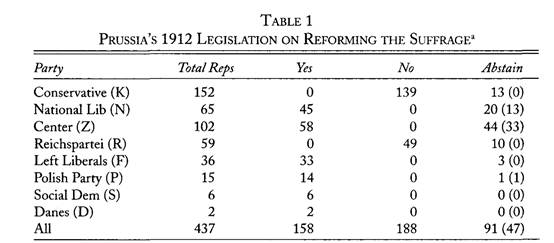
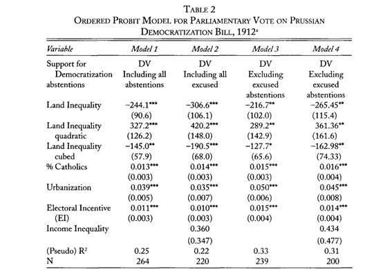
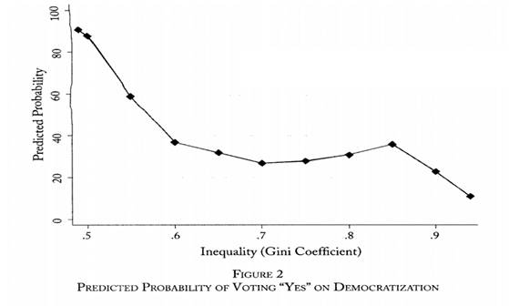

收录于合集
#民主与民主化 34 个
#比较政治学 121 个

文献来源：Daniel Ziblatt,” Does Landholding Inequality Block Democratization? A Test of the“Bread and Democracy” Thesis and the Case of Prussia”, World Politics ,Volume 60, Issue 04 , July 2008, pp 610 - 641
作者简介： Daniel Ziblatt，哈佛大学政府系教授。他的研究领域为欧洲政治、国家构建、民主化和历史政治经济学。https://scholar.harvard.edu/dziblatt/pages/curriculum- vitae-1
土地占有的不平等阻碍了民主化的发展么？格申克龙( Gerschenkron)曾提出，相比于社会财富水平，诸如土地这样的固定资产分配不平等是对民主化的一个主要阻碍的因素。为什么普鲁士不平等的选举制度能够在第一波民主化浪潮期间留存下来，一直是民主化研究中的一个难题。普鲁士民主化的受阻是否与土地占有不平等的状况相关呢？作者就以普鲁士为案例，探讨了以土地占有不平等为代表的结构性因素与民主化改革之间的关系，以及民主化过程中政治机会与政治精英选择的问题。
**
**
理论：选举改革( suffrage reform) 的两种逻辑
在对选举改革问题的研究上主要存在两条路径。第一条路径强调政权的结构根基。尤其对于第一波民主化国家和今天的新兴工业化国家来说，土地所有权问题十分关键。关于民主化问题的斗争通常都是在地主阶级利益的代表者和其他社会经济利益代表者之间展开。关于土地占有不平等对民主化的影响，学者们主要从以下三个方面来论证。一是，土地占有不平等在前工业化时代能够生成传统形式的社会控制，这对于民主化的形成是有害的。二是，在土地占有不平等现象非常严重的国家，土地精英有更强的能力和自主性去规避和挫败民主化。三是，把民主化当成再分配问题的间接反映。土地精英对民主可能导致的再分配十分恐惧，因此是民主化的抵制力量。在土地占有不平等和民主化之间更为具体的关系探究上，学者们有一些不同的看法。阿西莫格鲁(Acemoglu)和罗宾逊(Robinson)认为土地占有不平等和民主化之间的关系呈现一个倒U形。在不平等程度很高和很低的时候都不太可能促成民主化，民主化最有可能发生在不平等程度中等的时候。鲍什(Boix)利用跨国数据分析发现，土地被小农户占有的比重越大，民主转型越有可能发生。
第二条路径则认为不应忽视民主化进程还是一个政治进程。政治家必须要考虑政治改革对个人参与政治的影响，而不是完全把它看作一个社会经济利益冲突的间接反应。早在1942年，谢茨施耐德(Schattchneider)就提出美国选举权的拓展不仅仅是精英回应来自底层要求的结果，也是精英之间互相竞争的产物。格特鲁德·希梅尔法布(Gertrude Himmelfarb)在她关于1867年英国政治改革的研究中发现，正是辉格党和托利党的党派竞争最终促成了选举权的扩大。
作者认为，选举权改革既是一个政治家为其代表的经济利益行事的过程，又是政治家追求政治权力的产物。政治家们的偏好被他们所开展行动的制度环境所塑造。
案例分析
本文没有利用传统的跨国比较分析，而是聚焦于普鲁士的单一案例，基于这一案例的微观数据展开分析。普鲁士在一战前实行的是三级投票制度。在这一投票制度下，虽然每个超过24岁的男性都有选举权，但土地精英和富人对选举结果拥有不成比例的影响力。选民依据其缴纳税收的额度被分为三个等级。缴纳税收最多的第一等级包含3.6%的选民，第二等级包含10.8%的选民，纳税最少的第三等级涵盖了85.6%的选民。但三个等级能够选出的选举人（elector）数是相等的。议会中的议员最终由选举人选举产生。在民主化的第一波浪潮时期，普鲁士的这一选举制度一直维持了下来。但当时的政治家们并不是没想过修改这一制度。在1849-1912年之间，共有17个关于废除或改革现有选举体系的议案被纳入到下议院的议程，但最终都没有成功。作者主要围绕1912年投票的数据展开了自己的研究。一方面因为这是普鲁士最后一次的选举改革的尝试。在1912年投票时，德国的其他州诸如巴伐利亚已经进行了选举制度的改革，即便以德国自身的标准，普鲁士式也是不够民主的。另一方面也是因为这次投票的数据留存较为全面。通过案例分析作者想要对上文提到的两个理论逻辑进行检验。当年的投票结果见TABLE 1（括号内数字为投票前一刻无故离场的议员数）。民主化议案仅仅以30票之差的微弱劣势而没有通过。而在投票前一刻无故离场的议员就有47人。

每个议员的投票选择是文章的自变量。作者把议员投反对票的赋值为0，缺席的赋值为1，投赞成票的赋值为2。在两个模型中，作者包括了所有的缺席议员。在另两个模型中，作者把无故缺席的议员去除，把他们记为反对政党的政策路线。
研究的一个重要自变量就是土地占有不平等的水平。由于数据的可得性限制，作者利用的是普鲁士1895年土地占有情况的数据。普鲁士统计部门关于土地占有情况的数据是以乡村为单位，这一测量单位小于普鲁士投票选区的单位。通过搞清楚哪个村庄属于哪个选区，作者得出了土地占有情况的基尼系数。涉及到1895年后的选区变更，作者都以改革后的选区划分为准。但要注意到，作者所利用的土地占有数据与展开分析的年代实际上存在一些距离。在1912年的276个选区中，1895年土地占有的基尼系数平均数为0.77.最低值为0.49，最高值是0.94，数据的四分位距是0.14，可以说不同选区之间土地占有情况的差别相当大。
第二个重要的解释变量是政党竞争。作者认为那些在旧制度下表现得更好，在新制度下表现得差的议员不太可能支持选举制度改革，相反也是如此。在1912年，第二帝国的国民议会已经实行了普遍、平等、不记名的选举。作者通过将普鲁士最近一次选举的结果（1908）与国民议会选举结果相对比，从而判断议员们是否有支持1912年普鲁士选举制度改革的动机。由此，作者构造出一个选举动机(electoral incentive)的变量给每一位普鲁士州议会的议员赋值。
其他控制变量包括选区内收入不平等状况、城市化水平和天主教徒选民比重。通过散点图，作者发现土地占有不平等情况和因变量之间存在一定的非线性关系。考虑到这一情况，作者将土地占有不平等的变量数据分别做了平方和立方处理纳入回归，以保证研究的有效性。回归结果见TABLE 2。

由上图可知，除了收入不平等外所有的变量都是显著的。而且土地占有不平等这一变量的系数特别大。如果控制其他变量在其平均值，将土地占有不平等的程度由最低调至最高，那么议员缺席或投反对票的可能性也将从10%增加至96%。从整体来看，土地不平等和支持民主化是负相关的。但是这一效应并不是线性的。其中土地不平等和议员为民主化议案投票之间的具体关系见FIGURE 2。

由图可以发现，土地占有不平等与民主化之间的关系既不同于鲍什所说的负相关，也不符合阿西莫格鲁和罗宾逊等人提出的倒U型曲线关系。不过由TABLE 2我们也能发现，土地占有情况的基尼系数并不能够完美的预测出议员们的投票选择。土地占有情况等结构性的因素虽然重要，但构造变量——选举动力也对投票结果起到了重要的影响。
之后，作者又进一步探索了结构性因素影响议员投票选择的因果路径。他通过研究发现，包括土地占有不平等情况等因素在内的选区特征能够决定哪一个政党能在哪一个选区获胜。也就是说政党背后的社会经济经济因素确实在很大程度上影响了政党对于民主化法案的态度。这种政党的政治选择通过政党的纪律最终决定了议员的投票选择。但一些党派中仍存在投票前无故离场拒绝投票的议员。这些异议者的存在说明，诸如选区特征这样的结构因素同样对议员的政治选择有着直接影响，而且这种影响可能与政党的政策路线相悖。
编后记
相比于本号之前的推送，这篇文章可以说是一篇老文了。但从文章质量来讲，却绝对说不上过时。对于我们这些读者来说，本文的启示也许不仅仅是某一具体观点，更是作者能够抓住历史的一瞬，这种以小见大的研究设计。在民主化研究里，我们常常能看到深入案例、呈现过程的比较历史分析，我们也常常能看到时空范围宏大的量化研究。但像本文这种深入挖掘某一重要历史时刻及其背后微观数据的研究其实并不多见。围绕105年前普鲁士议会为民主化议案投票的那个下午，作者竟探讨了土地占有不平等与民主化的关系、政治机会变化与精英政治行为等多个重要议题。当然，大家也可以说，从单一案例出发可能失之偏颇，无法解决特殊性与普遍性的问题。不过，作为一篇论文，能够对相关议题的研究有所推进就体现了它的价值。
政文观止编辑部
编译不易，